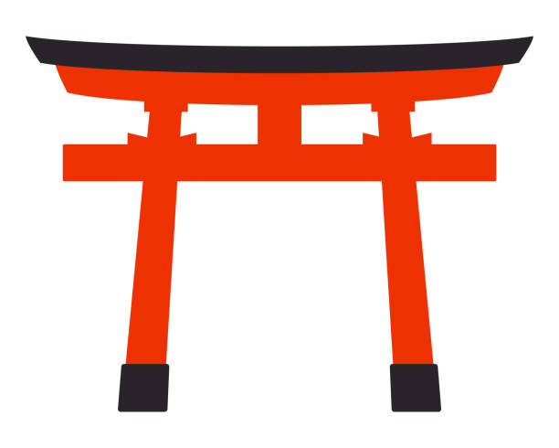
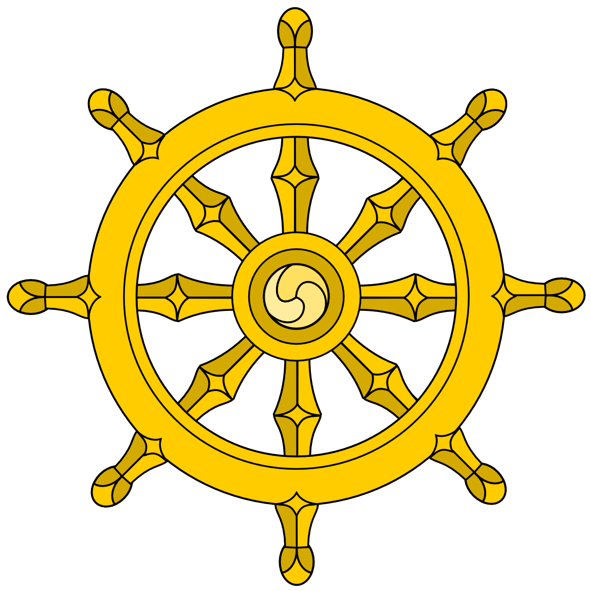

Japán vallásai

Shinto
Sintó (Sintoizmus): Japán ősi, animista eredetű vallása, amely a természetben és a tárgyakban lakozó szellemek, a kamik tiszteletén alapul. Nincsenek rögzített dogmái vagy szentiratai, középpontjában a rituális tisztaság és a természet harmóniája áll.

Buddhizmus
A 6. században érkezett Kínán és Koreán keresztül. Mára a sintóval összefonódva a mindennapok része, különösen a halállal kapcsolatos szertartásokban és a spirituális fejlődésben játszik szerepet.
Konfucianizmus és Taoizmus
Bár intézményesen kevésbé láthatóak, mélyen meghatározzák a japán társadalmi etikát, a hierarchiát és a fegyelmet, valamint a naptárrendszereket és a jóslási szokásokat.
Kereszténység és új vallások
A kereszténység a lakosság kis százalékát érinti, de esztétikája (például a templomi esküvők) népszerű. Emellett számos modern "új vallás" (sinzukjó) létezik, amelyek a hagyományos elemeket ötvözik karizmatikus vezetők tanításaival.
Shinto (bővebben)
A shintó (vagy sintoizmus) Japán ősi, őshonos vallása, amely alapjaiban határozza meg a szigetország kultúráját és mindennapjait. A szó jelentése: „az istenek útja” (japánul: Kami no Micsi). A shintó nem egy hagyományos értelemben vett vallás, mivel nincs alapítója, nincsenek kötelező dogmái és nincs egységes szentírása sem. Inkább rítusok, hiedelmek és a természet tiszteletének összessége.